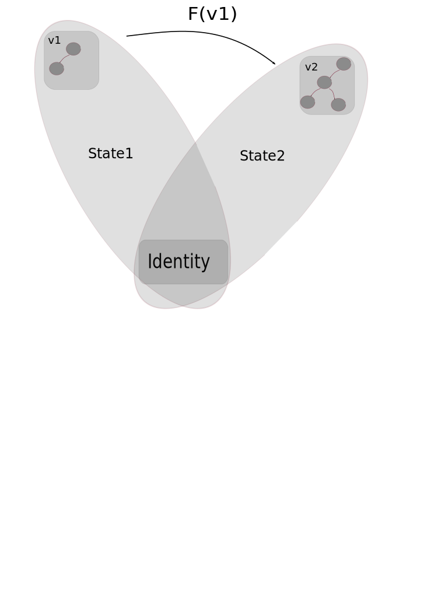
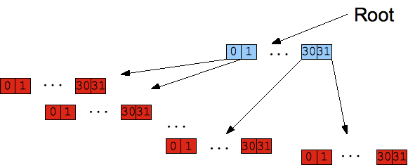
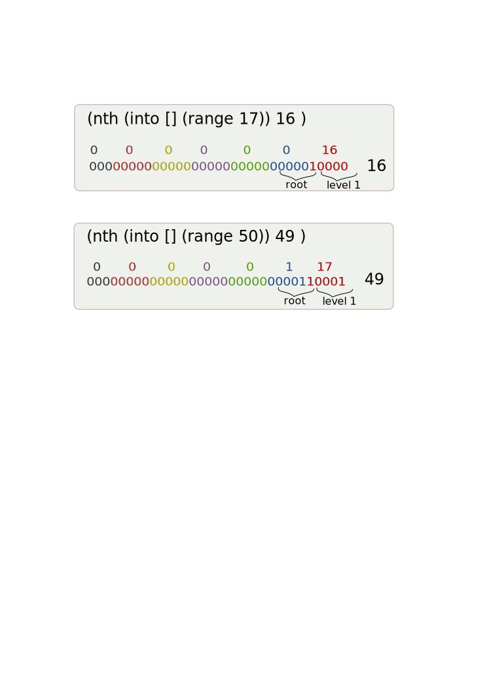
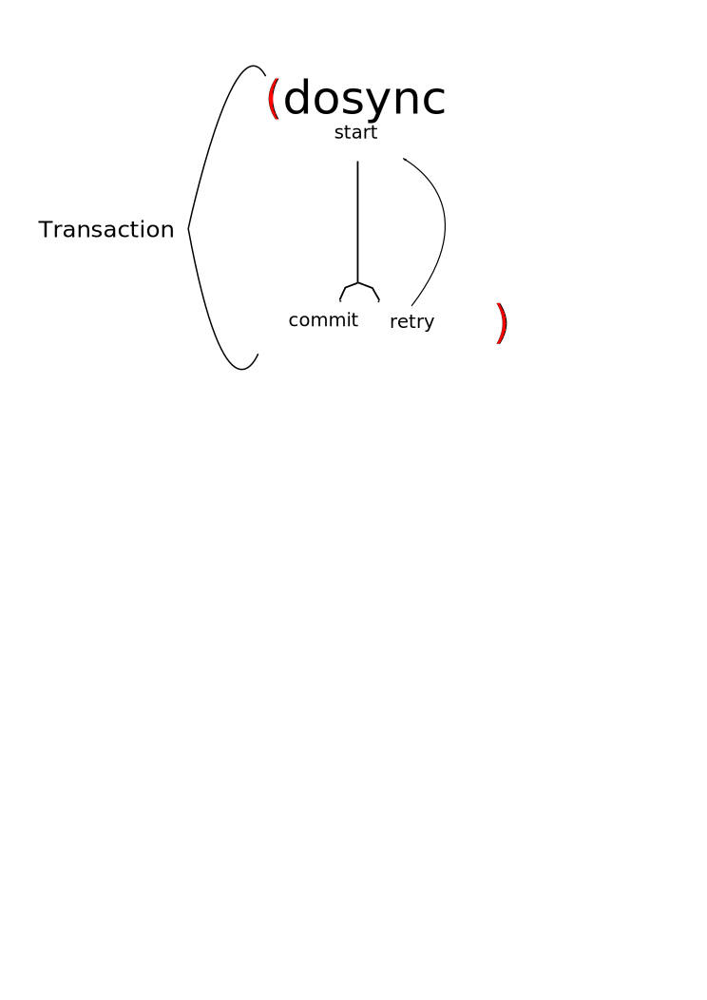
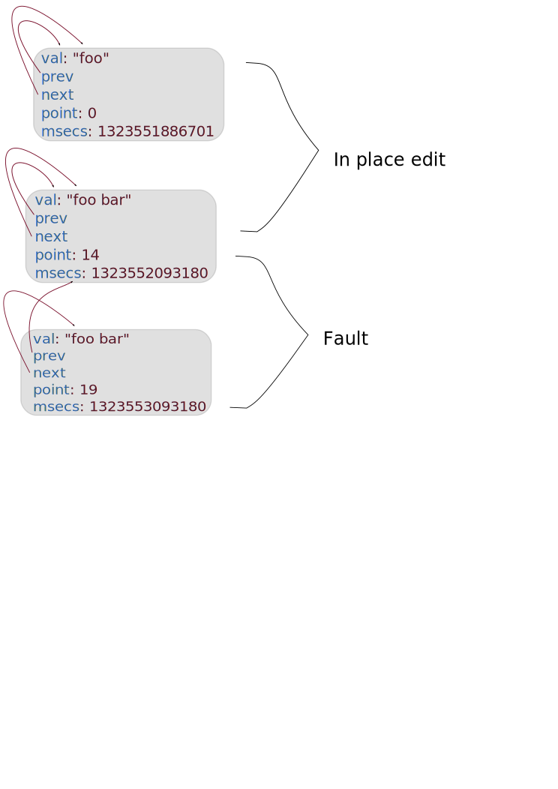

| z, ? | toggle help (this) |
| space, → | next slide |
| shift-space, ← | previous slide |
| d | toggle debug mode |
| ## <ret> | go to slide # |
| c, t | table of contents (vi) |
| f | toggle footer |
| r | reload slides |
| n | toggle notes |
| p | run preshow |
Concurrency deals with structuring our software to handle non deterministic control flow , parallelism deals with running operation on multiple cores for better throughput (http://tinyurl.com/bv483my).
Livelock Threads are often busy responding to one another, if two threads are responding endlessly to one another they are livelocked, it similar to two people passing in the same corridor each trying to give head way to another. Starvation happens when a thread tries to access a shared resource but get little or not access to it, if for example one threads calls frequently a long synchronized method on an object it locks that object for other threads.
Yes locks in Clojure are possible, not too surprising since the good java interop should enable Clojure in Clojure A basic lock example, notice that the shorter version cannot complete until the longer one releases its lock
(def o (Object.))
(defn sleep-lock [interval]
(future
(locking o
(do
(Thread/sleep interval)
(str (java.util.Date.))))))
(def f1 (sleep-lock 500))
(def f2 (sleep-lock 100))
(println (str "longer " @f1))
(println (str "shorter " @f2))In erroneous situation its very hard to recover and decide which lock to release take etc..
* Value: an immutable magnitude, quantity, number, or composite of these * Identity: a putative entity we associate with a series of causally related values (states) over time * State: value of an identity at a moment in time * Time: relative before/after ordering of causal values.

Clojure takes immutability one step further
Here we see that the original value hasn't changed
(def a [1 2 3])
(conj a 4)
(println a)Clojure ADT are implemented as 32bit partitioned trees, in this case we see the tree of a vector

The binary partitioning scheme is to divide each level in the tree into 5 bits, the most left hand bits are those of the root (relative the tree height)

arrayFor is looking for the matching level node, the loop goes through 5 bits at a time shifting
public Object nth(int i){
ensureEditable();// transient access
Object[] node = arrayFor(i);
return node[i & 0x01f];// the 0x01f masks the lower 5 bits
}
private Object[] arrayFor(int i){
if(i >= 0 && i < cnt) {
if(i >= tailoff())// tail is the current insertion buffer
return tail;
Node node = root;
for(int level = shift; level > 0; level -= 5) // shift is 5*(1+ h)
node = (Node) node.array[(i >>> level) & 0x01f];
return node.array;
}
throw new IndexOutOfBoundsException();
} | Asynchronous | Synchronous | |
| Coordinated | Ref | |
| Independent | Agent | Atom |
set! and binding
(def v 1)
(alter-var-root #'*out* (constantly *out*))
(defn set-5 [o]
(binding [v o] ; v bound to TL
(set! v 5)
(println "p1:" v))
)
(let [thread (Thread. #(set-5 v))]
(.start thread)
(.join thread)
(println "p2:" v)) Var(Namespace ns, Symbol sym, Object root){
this(ns, sym);
this.root = root;
++rev;
}Framing implementation: 2. dvals holds current Frame which holds bindings and previous Frame, 3. pushThreadBindings invoked by bindings, stores a new Frame into dvals, 4. A symmetric popThreadBindings pulls previous Frame.
public final class Var extends ARef implements IFn, IRef, Settable{
static class Frame {
Associative bindings; // Var->TBox
Frame prev;
...
}
static final ThreadLocal<Frame> dvals = new ThreadLocal<Frame>(){
...
};
public static void pushThreadBindings(Associative bindings){
Frame f = dvals.get();// current frame
Associative bmap = f.bindings;
for(ISeq bs = bindings.seq(); bs != null; bs = bs.next())
{
IMapEntry e = (IMapEntry) bs.first();
Var v = (Var) e.key();
if(!v.dynamic)
throw new IllegalStateException(String.format("Can't dynamically bind non-dynamic var: %s/%s", v.ns, v.sym));
v.validate(v.getValidator(), e.val());
v.threadBound.set(true);
// assoc new Frame value
bmap = bmap.assoc(v, new TBox(Thread.currentThread(), e.val()));
}
dvals.set(new Frame(bmap, f));
}
...
}This example show how we send tasks to the agent and wait for it to finish processing, we use send-off and not send since it blocks, the difference is with the thread pools that will be used to process this, see next..
(def a (agent 5))
(dotimes [i 5]
; we use send-of and not send
(send-off a #(do (Thread/sleep 100) (inc %))))
(println "p1:" @a)
(await a)
(println "p2:" @a)The send implementation is calling dispatch
(defn send
"Dispatch an action to an agent. Returns the agent immediately.
Subsequently, in a thread from a thread pool, the state of the agent
will be set to the value of:
(apply action-fn state-of-agent args)"
{:added "1.0"
:static true}
[^clojure.lang.Agent a f & args]
(.dispatch a (binding [*agent* a] (binding-conveyor-fn f)) args false)) dispatch creates a new actions and dispatches it
public class Agent extends ARef {
...
AtomicReference<ActionQueue> aq = new AtomicReference<ActionQueue>(ActionQueue.EMPTY);
public Object dispatch(IFn fn, ISeq args, boolean solo) {
...
Action action = new Action(this, fn, args, solo);
dispatchAction(action);
return this;
} dispatchAction gets the current transaction, if it exists it sets the action on it The Agent's queue implementation is based on Treiber's algorithm (see http://tinyurl.com/37mydc) for non blocking stack.
static void dispatchAction(Action action){
LockingTransaction trans = LockingTransaction.getRunning();
if(trans != null)// if called within transaction
trans.enqueue(action);
else if(nested.get() != null)
{
nested.set(nested.get().cons(action));
}
else
action.agent.enqueue(action);
}
...
void enqueue(Action action){// push
boolean queued = false;
ActionQueue prior = null;
while(!queued)// while we didn't manage to CAS
{
prior = aq.get();
queued = aq.compareAndSet(prior,
new ActionQueue((IPersistentStack)prior.q.cons(action), prior.error));
}
if(prior.q.count() == 0 && prior.error == null)// only first action
action.execute();
} The execute invokes the action, if send is used pooledExecutor is used (closer to the cpu count of threads less context switching) if send-of is used then a cached thread pool is used, a new Thread (potentially) will be created for each action (good for blocking actions).
void execute(){
try
{
if(solo)
soloExecutor.execute(this);// dynamic pool
else
pooledExecutor.execute(this);// fixed size pool (cpu cores + 2)
}
catch(Throwable error)
{
if(agent.errorHandler != null)
{
try
{
agent.errorHandler.invoke(agent, error);
}
catch(Throwable e) {} // ignore errorHandler errors
}
}
}pop implementation, each one of these is running a seperate thread, the if before the finally is pulling the next message
static void doRun(Action action){// invoked from run in a Thread
try
{
nested.set(PersistentVector.EMPTY);
Throwable error = null;
try
{// the current message processing
Object oldval = action.agent.state;
Object newval = action.fn.applyTo(RT.cons(action.agent.state, action.args));
action.agent.setState(newval);
action.agent.notifyWatches(oldval,newval);
}
catch(Throwable e)
{
error = e;
}
...
boolean popped = false;
ActionQueue next = null;
while(!popped)
{
ActionQueue prior = action.agent.aq.get();
next = new ActionQueue(prior.q.pop(), error);
popped = action.agent.aq.compareAndSet(prior, next);
}
if(error == null && next.q.count() > 0) // pulling more actions
((Action) next.q.peek()).execute();
}
finally
...
}replaces the current value without taking older value into account
(def x (atom 1))
(reset! x 2)
(println @x)This compare-and-set! fails since we reset curr-val before the second thread had a chance to CAS.
(def x (atom 1))
(alter-var-root #'*out* (constantly *out*))
(defn update-atom []
(let [curr-val @x]
(println "update-atom: curr-val =" curr-val) ; -> 1
(Thread/sleep 50) ; give reset! time to run
(println
(compare-and-set! x curr-val (inc curr-val))))) ; -> false
(let [thread (Thread. update-atom)]
(.start thread)
(Thread/sleep 25)
(reset! x 3) ; taken after curr-val set
(.join thread))
(println @x)unlike CAS which fails, swap! repeatedly replay the function until no collision is made we can see that its running twice
(alter-var-root #'*out* (constantly *out*))
(def x (atom 1))
(defn update-atom [curr-val]
(println "update-atom: curr-val =" curr-val)
(Thread/sleep 50) ; give reset! time to run
(inc curr-val))
(let [thread (Thread. #(swap! x update-atom))]
(.start thread)
(Thread/sleep 25) ; give swap! time to call update-atom
(reset! x 3)
(.join thread))
(println @x)deref state and ctor, here we see that the atom stores the reference in an atomic container
final public class Atom extends ARef{
final AtomicReference state;
public Atom(Object state){
this.state = new AtomicReference(state);
}
...
public Object deref(){
return state.get();
} reset!, compare-and-set implementation, nothing too exciting
public Object reset(Object newval){
Object oldval = state.get();
validate(newval);
state.set(newval);
notifyWatches(oldval, newval);
return newval;
}
public boolean compareAndSet(Object oldv, Object newv){
validate(newv);
boolean ret = state.compareAndSet(oldv, newv);
if(ret)
notifyWatches(oldv, newv);
return ret;
} swap! implementation, we see the loop as long as the compareAndSet fail the loop will carry on
public Object swap(IFn f, Object x, Object y, ISeq args) {
for(; ;)
{
Object v = deref();
Object newv = f.applyTo(RT.listStar(v, x, y, args));
validate(newv);
if(state.compareAndSet(v, newv))
{
notifyWatches(v, newv);
return newv;
}
}
} "Atomic" commit or retry, "Consistent" constraints on the data will not be violated, "Isolated" changes made inside a transaction are not visible outside the transaction until it commits
commit if successful, retry if conflict (up to RETRY_LIMIT currently 10,000), this is a simplification of the real life cycle which has 5 states

A basic alter example
(def account (ref 0))
(defn deposit [amount]
(alter account + amount ))
(def f (future (dosync (deposit 5))))
(do
(deref f)
(println @account))ref-set usage is frowned upon alter is preferable
(def account (ref 0))
(def f
(future
(dosync
(ref-set account (+ 5 @account)))))
(do
(deref f)
(println @account))Here we how see an example for retries (T2 retries couple of times), this can be prevented in this case since + is commutative The reason that T2 is being retried is because T1 is older and has tinfo set (meaning it made a write change)
(alter-var-root #'*out* (constantly *out*))
(def account (ref 0))
(defn deposit [amount] (alter account + amount ))
(def f1 (future
(dosync
(deposit -2)
(Thread/sleep 500)
(println (str "T1 running") @account)
(deposit 5))))
(def f2 (future
(dosync
(println (str "T2 running") @account)
(deposit 5))))
(do
(deref f1)
(deref f2)
(println @account))commute, here we use commute on a commutative operation (+) in order to avoid retries.
(alter-var-root #'*out* (constantly *out*))
(def account (ref 0))
(defn deposit [amount] (commute account + amount))
(def f1 (future
(dosync
(deposit -2)
(Thread/sleep 500)
(println (str "T1 running") @account)
(deposit 5))))
(def f2 (future
(dosync
(println (str "T2 running") @account)
(deposit 5))))
(do
(deref f1)
(deref f2)
(println @account))Write skew example http://paste.lisp.org/display/87117#1
(alter-var-root #'*out* (constantly *out*))
(def account1 (ref 100))
(def account2 (ref 100))
(defn deposit [account amount]
(dosync
(if (> (+ @account2 @account1) 0)
(alter account + amount))))
(let [deposits1 (repeat 10 #(deposit account1 -200))
deposits2 (repeat 10 #(deposit account2 -200))]
(dorun (apply pcalls (interleave deposits1 deposits2)))
(println @account1)
(println @account2))Here we use ensure to prevent the write skew issue, ensure prevents other transactions to perform write operations on the ref.
(alter-var-root #'*out* (constantly *out*))
(def account1 (ref 100))
(def account2 (ref 100))
(defn deposit [account amount]
(dosync
(ensure account1)
(ensure account2)
(if (> (+ @account2 @account1) 0)
(alter account + amount))))
(let [deposits1 (repeat 10 #(deposit account1 -200))
deposits2 (repeat 10 #(deposit account2 -200))]
(dorun (apply pcalls (interleave deposits1 deposits2)))
(println @account1)
(println @account2))We can set validators on var/ref/agent/atom
(alter-var-root #'*out* (constantly *out*))
(def num (ref 0 :validator integer?))
(try
(dosync
(ref-set num 1)
; no commit, transaction is aborted
(ref-set num "foo"))
(catch Exception e (println (str e))))We can add watchers, the watch fn will be called synchronously, on the agent's thread if an agent, before any pending sends if agent or ref.
(alter-var-root #'*out* (constantly *out*))
(def num (ref 0))
(add-watch num nil
(fn [key ref old new] (println old new )))
(dosync
(ref-set num "foo"))The LockingTransaction is held in thread local storage, the info class holds the transaction status, most status are self explanatory KILLED is set when one TX barges another info is also a part of lock-free strategy to mark Refs as having an uncommitted change
public class LockingTransaction{
final static ThreadLocal<LockingTransaction> transaction =
new ThreadLocal<LockingTransaction>();
static final int RUNNING = 0; // executing code
static final int COMMITTING = 1; // committing changes to refs
static final int RETRY = 2; // will be retied
static final int KILLED = 3; // barged
static final int COMMITTED = 4; // done committing
public static class Info{
final AtomicInteger status;
final long startPoint;
final CountDownLatch latch;
public Info(int status, long startPoint){
this.status = new AtomicInteger(status);
this.startPoint = startPoint;
this.latch = new CountDownLatch(1);
}
public boolean running(){
int s = status.get();
return s == RUNNING || s == COMMITTING;
}
}runInTransaction is called from the dosync macro, it gets the thread local LockingTransaction (if exists)
static public Object runInTransaction(Callable fn) throws Exception{
LockingTransaction t = transaction.get();
if(t == null)
transaction.set(t = new LockingTransaction());
if(t.info != null)
return fn.call();
return t.run(fn);
} The run method is the core of the transaction lifecycle, in it the retry loop is running
Object run(Callable fn) throws Exception{
...
for(int i = 0; !done && i < RETRY_LIMIT; i++)
{
try
{
getReadPoint();// tracks order of retries across all transactions.
if(i == 0)
{
startPoint = readPoint;
startTime = System.nanoTime();
}
info = new Info(RUNNING, startPoint);
ret = fn.call();// calling the body of dosync
}
...
}
}vals include commuted values (unlike sets)
// modified by current TX Refs -> in-transaction values.
final HashMap<Ref, Object> vals = new HashMap<Ref, Object>();
// Refs modified by current TX by using ref-set or alter
final HashSet<Ref> sets = new HashSet<Ref>(); here we see alter, it gets the old value, applies the fn to it and sets it back
public class Ref extends ARef implements IFn, Comparable<Ref>, IRef{
...
public Object alter(IFn fn, ISeq args) {
LockingTransaction t = LockingTransaction.getEx();
return t.doSet(this, fn.applyTo(RT.cons(t.doGet(this), args)));
}Here we see how ref value is obtained within the TX (alter calls it), if it doesn't have a TX value the value is looked for in the tvals
Object doGet(Ref ref){
if(!info.running())
throw retryex;
if(vals.containsKey(ref))
return vals.get(ref);
try
{
ref.lock.readLock().lock();
if(ref.tvals == null)
throw new IllegalStateException(ref.toString() + " is unbound.");
Ref.TVal ver = ref.tvals;
do
{
if(ver.point <= readPoint) {
return ver.val;
}
} while((ver = ver.prior) != ref.tvals);
}
finally
{
ref.lock.readLock().unlock();
}
//no version of val precedes the read point
ref.faults.incrementAndGet();
throw retryex;
}The symetric set value method
Object doSet(Ref ref, Object val){
if(!info.running())
throw retryex;
if(commutes.containsKey(ref))
throw new IllegalStateException("Can't set after commute");
if(!sets.contains(ref))
{
sets.add(ref);
lock(ref);
}
vals.put(ref, val);
return val;
}Each Ref stores multiple versions of committed values in a circular list tvals
public class Ref extends ARef implements IFn, Comparable<Ref>, IRef{
...
public static class TVal{
Object val;// the committed value
long point;// transaction commit id
long msecs;// TVal creation time
TVal prior;// older commits
TVal next;// newer commits
}
TVal tvals;
...
}Values are added if faults happend

Adding the faulted value into the tvals list reduces the likelihood for other TX's to have faults (assuming they started after the committing TX)
A knows that according to the tinfo field on the Ref
In order for A to barge B (else A will retry): 1. A must have been running for at least 1/100th of a second (BARGE_WAIT_NANOS) 2. A started before B (favors older txns) 3. B has a status of RUNNING and can be changed to KILLED If B status is set to KILLED it will retry
private boolean barge(Info refinfo){
boolean barged = false;
// if this transaction is older
// try to abort the other
if(bargeTimeElapsed() && startPoint < refinfo.startPoint)
{
barged = refinfo.status.compareAndSet(RUNNING, KILLED);
if(barged)
refinfo.latch.countDown();
}
return barged;
} 1. We saw that locks are held briefly in the doSet doGet methods, 2. The one case that a look is held for the entire TX is if ensure was called 3. The tinfo field save us the need to lock the Ref for the entier TX since we can check for pending writers
Here we see the locking method which is called from doSet, here we can see how write conflict is detected using the tinfo field on the Ref
Object lock(Ref ref){
releaseIfEnsured(ref); //can't upgrade readLock, so release it
boolean unlocked = true;
try
{
tryWriteLock(ref);// trying to get the write lock to the ref
unlocked = false;
if(ref.tvals != null && ref.tvals.point > readPoint)
throw retryex;
Info refinfo = ref.tinfo;
//write lock conflict
if(refinfo != null && refinfo != info && refinfo.running()) // did any TX has uncommited write?
{
if(!barge(refinfo))
{
ref.lock.writeLock().unlock();
unlocked = true;
return blockAndBail(refinfo);
}
}
ref.tinfo = info;
return ref.tvals == null ? null : ref.tvals.val;
}
finally
{
if(!unlocked)
ref.lock.writeLock().unlock();
}
}